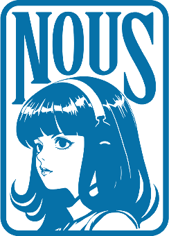

NaCLip · By ASV Labs
A new look for
Hermes Desktop.
NaCLip brings themes, widget packs and appearance tools to Hermes Desktop. Your agents, models and conversations stay powered by Hermes. The workspace feels like you.
Install NaCLip
Same Hermes.
A different feel.
Choose Graphite, Ocean or Paper. Customize your colors, icons and navigation, or draft a theme with your agent. Apply the skin inside Hermes and keep your existing setup.
Experimental · Native macOS test verified · See scope ↗ 